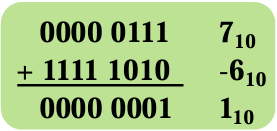

Computer Organization & Design¶
Chapter 1: Computer abstractions and Technology¶
Introduction¶
von Neumann architecture¶
- Computation and memory are separated
- Memory that stores data and instructions
- Input and output mechanisms
- Istructions set architecture

RISC Architecture¶
RISC(Reduce Instruction Set Computer): a computer instruction set - fewer cycles per instruction (CPI) than a Complex Instruction Set Computer(CISC)
What is a computer¶
Computer is an electronic device that manipulates data according to a list of instructions(program), with capability of Turing machine.
- Electronic realization
- A set of instructions in a well-defined manners
- Excution of a pre-recorded list of instructions
- Memory that can store instructions and data
- Turing-complete in theory
Computer Organization¶

hardware¶
- input
- ouput
- memory:
- Main Memory: volatile; used to hold programs while they are running(e.g. DRAM in computers)
- Second memory: nonvolatile; used to store programs and data between runs(e.g. Flash in PMD, magnetic discks)
- Volatile
- DRAM(Dynamic Random Access Memory)
- SRAM(Static Random Access Memory)
- Nonvolatile
- Solid state memory(Flash Memory)
- Magnetic disk(Hard disk)
- CPU(Processor): active part of the computer, which adds numbers, test numbers, signals I/O devices to activate, and so on.
- datapath: performs arithmetic operation
- control: commands the datapath, memory, and I/O devices according to the instructions of the program

Software¶
- Application software
- System software
- Operation system(Linux, macos)
- Compiler: Translation of a program written in HLL(e.g. GCC)
- Firmware: Software specially designed for a piece of hardware(Driver software)


From a High-Level Language to the Language of Hardware¶
- Lower-level details are hidden to higher levels
- Instruction set architecture ---- the interface between hardware and lowest-level software
- Many implementations of varying cost and performance can run identical software
Integrated Circuits¶
Transistor¶


Manufacturing ICs¶

Integrated Circuit Cost¶
Yield: proportion of working dies per wafer

Performance and Idea¶
Response Time and Throughput¶
- Response time/execution time: How long it takes to do a task
- Throughput(bandwidth): Total work done per unit time
Relative Performance¶
Performance = 1 / Excution Time
e.g. 10s on A, 15s on B
Excution TimeB / Excution TimeA / = 15s / 10s = 1.5
So A is 1.5 times faster than B
Measuring Excution Time¶
- Elapsed time: Total response time, including all aspects
- Processing, I/O, OS overhead, idle time
- CPU time: Time spent porcessing a given job
Operation of digital harware governed by a constant-rate clock
CPU Time¶
Instruction Count and CPI(Cycles per Instruction)¶
CPI in More Detail¶
If different instruction classes take diferrent numbers of cycles
Performance Summary¶
Performance depends on: - Algorithm: affects IC, possibly CPI - Programming language: affects IC, CPI - Compiler: affects IC, CPI - Instruction set architecture: affects IC, CPI, Tc
Amdahl's Law¶
Corollary: make the common case fast
Eight Great Ideas¶
- Design for Moore's Law
- Use Abstraction to Simplify Design
- Make the Common Case Fast
- Performance via Parallelism
- Performance via Pipelining
- Performance via Prediction
- Hierarchy of Memories
- Dependability via Redundancy
Chapter 3: Arithmetic for Computer¶
Introduction¶
Generic Implementation¶
- use program counter (PC) to link to instruction address
- fetch the instrcution from memeory
- the instruction tells what needs to be done
- ALU will perform the specified arithmetic operations
Signed Number Representations¶
| Sign Magnitude | Two's Complement |
|---|---|
| 100 = -0 | 100 = -4 |
| 101 = -1 | 101 = -3 |
| 110 = -2 | 110 = -2 |
| 111 = -3 | 111 = -1 |
Addition, subtraction and ALU¶
Addition & Subtraction¶
Subtraction: Addition of 2's complement

Overflow conditions¶
Overflow process¶
- Hardware detection in the ALU
- Generation of an exception (interrupt)
- Save the instruction address (not PC) in special register EPC
- Jump to specific routine in OS
- Correct & return to program
- Return to program with error code
- Abort program
Consturcting an ALU¶
1-bit Full Adder
Ripple Carry Adder, RCA
with a mux, we can let it support and, or, +, etc.
Extended 1-bit ALU-- Subtraction¶
\({a - b} = {a + (-b) = a + \overline{b} + 1}\)
Binvert to define whether b should be inverted; if we do subtraction, we should set Binvert and CarryIn as 1, Operation as 2
Extended 1 bit ALU-- comparison¶
Subtraction \(({rs - rt})\) Use of sign bit as indicator
Complete ALU¶
- Overflow
- should only be done at Most Significant Bit (ALU63)
- if \({C_{in} \bigoplus {C_{out} = 1}}\), overflow occurs
- Less & Set
slt rd, rs1, rs2- the final result should be given to
Result[0](Least Significant Bit),Result[1:63] = 0 Lessof ALU0 is given bySetof ALU63, ortherLessis 0
A bit of optimization¶
- If doing
+,Binvert&CarryInof ALU0 is 0; if doing-,Binvert&CarryInof ALU0 is 1. They can be merged asBnegate. - Add a zero detector for operations like
beq,bne
We need 4-bits control lines, consisting of Ainvert , Bnegate , Operation (2-bits)
A little bit faster¶
Carry Lookahead Adder, CLA¶
Time is wasted in RCA, for the next adder should wait for the previous adder to carry.
Their are only two possibilities for \({carry = 1}\) (carry is passed): \({a = b = 1}\) or \({a \bigoplus b = 1, carry = 1}\)
Therfore, we have,
\({C_{out} = a \cdot b + (a + b)\cdot c_{in}}\)
==> \({C_{out} = g + p\cdot c_{in}}\) (\({generate g = a \cdot b, propagate p = a + b}\))